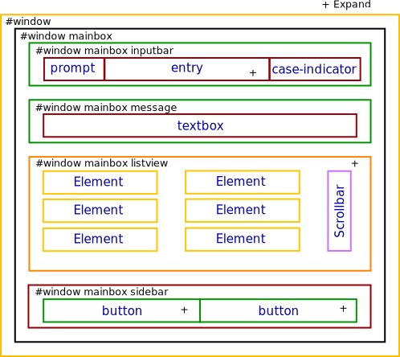
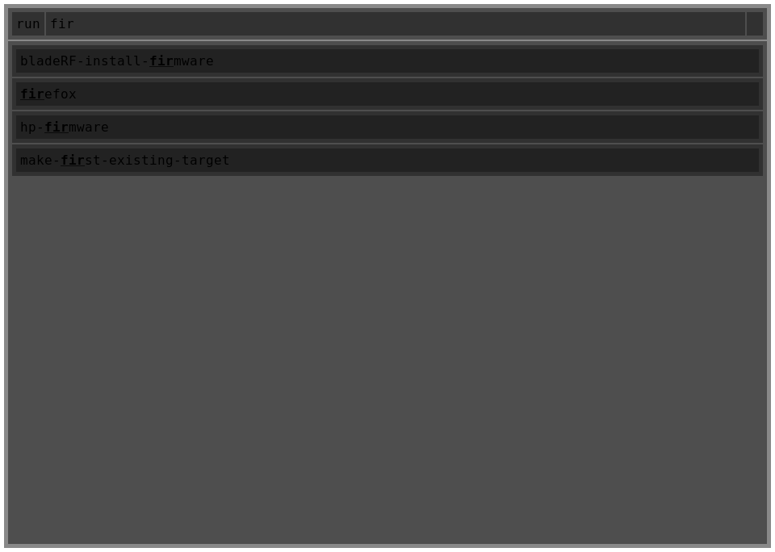
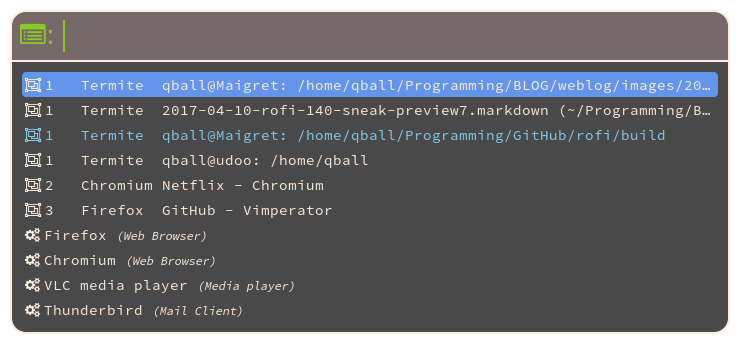
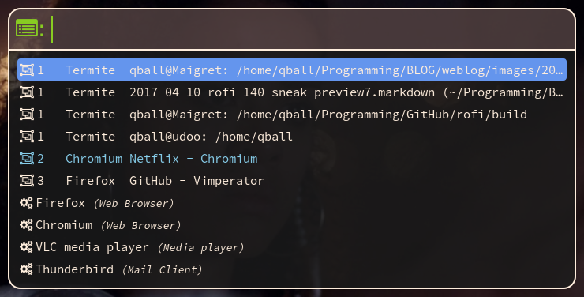
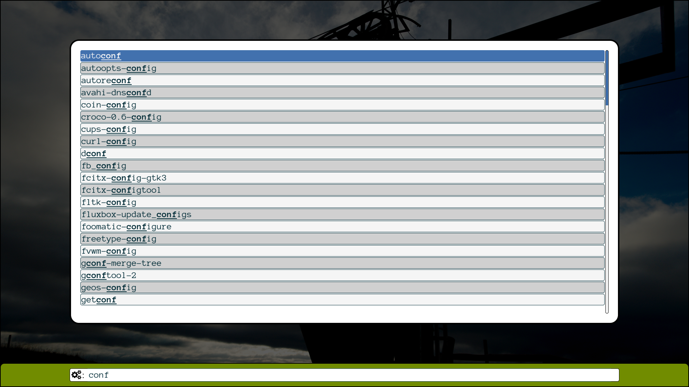
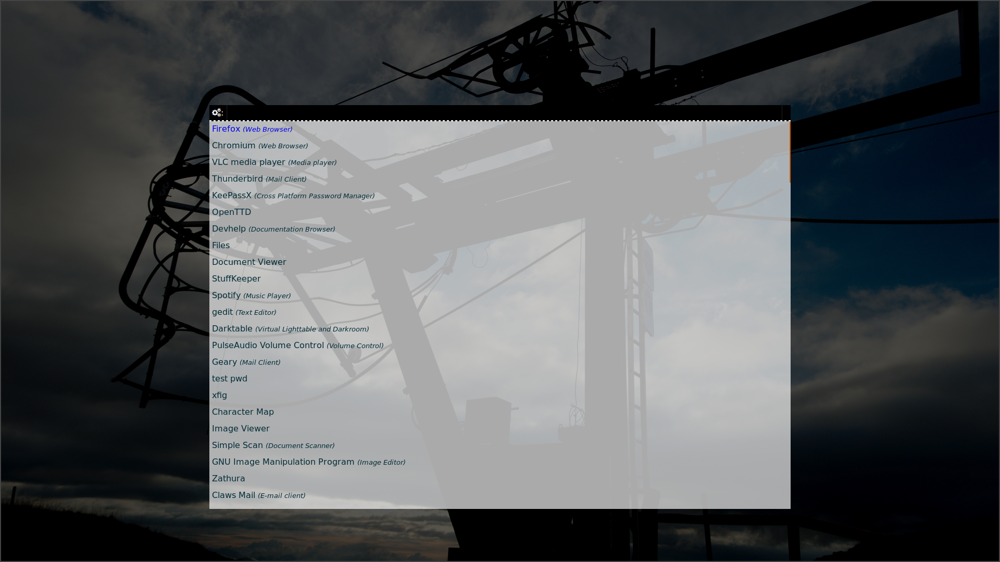
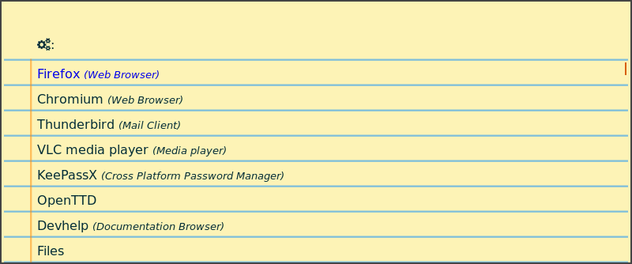

Transparency
Transparency within rofi
The images in this guide are outdated, but the principals still hold.
Rofi window is build up by first drawing the background, and then each widget above it, with the correct transparency factor.
Remember the general widget structure:

This means if you set every widget to be 30% transparent on a white background: it will look like:

The transparency applies one on top of the other, so while they all are 30%, in the end it will be less transparent.
Try it yourself
rofi -theme-str '@theme "/dev/null" window { background-color: white; }* { padding:5; background-color: rgba(20,20,20,0.5);}' -show run
This can sometimes be difficult when creating themes with a nice transparent background. The trick to make this work nicely is the following.
Specify fully transparent background on the highest level.
* {
background: transparent;
}
Then set the background on the window box.
window {
background: #cc1c1c1c;
}
Now if you only set the background on widgets you want differently colored, it nicely works out.
Transparency on the window
This determines how transparency on the window is handled.
This is set the be transparency option on the window widget.
The option takes a string. There are basically 4 options:
No transparency or "real"
The background of the window is black and fully transparent, and everything is drawn on top of this. This means that if you have a composite manager (ARGB window), you get a fully transparent background, otherwise fully black.
This is the preferred option if you have a composite manager running.

This image is actually partially transparent (won't show here clearly as block background is white.)
Fake transparency or "screenshot"
This tries to emulate a transparent window by taking a screenshot of the window before showing and then drawing everything on top of this. While this is not an ideal solution (it won't update if something changes in the background) it is often a very usable facsimile.

Note: It can get very slow, especially on high resolution (4k) monitors.
Background transparency or "background"
This uses the background image (the root window image). This is, in my opinion, mostly useful when used fullscreen.


Picture
If instead of one of the above option, you specify a path to a png file this is used as background image. This can create a theme where you use paper as background.
